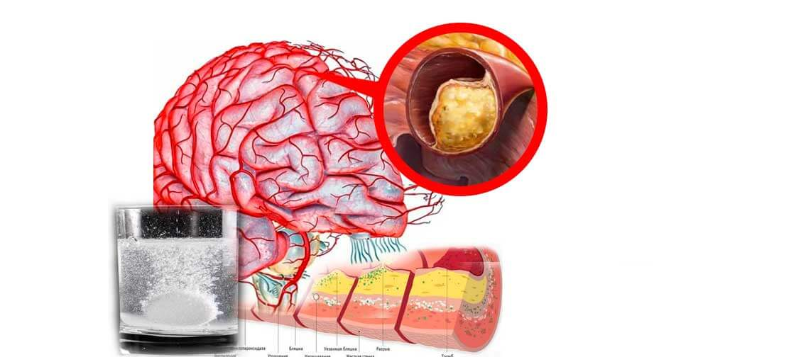

СТАТИИ •
ЗЛАТЕН ФОНД • ИНТЕРВЮTA
Признаци на дистония на мозъчните съдове
Ами какво да правите ако имате главоболие, шум в ушите и изтръпване на крайниците?
Дистонията на мозъчните съдове е патологично състояние, при което се нарушава съдовия тонус и нормалното кръвообращение в мозъчните тъкани. В тази статия можете да прочетете за нейните причини, механизми и симптоми, при наличието на които е време да подадете аларма. И вие също така ще научите за тежките усложнения на това коварно заболяване и съвременния подход към лечението, достъпен за всеки.
Дистонията на мозъчните съдове влияе върху работата на целия организъм. Поради недостатъчното кръвоснабдяване на мозъка, цялостната производителност намалява, появява се слабост и важните телесни системи започват да функционират неправилно.
Първоначалните симптоми на дистонията на мозъчните съдове включват:
- главоболие;
- шум в ушите;
- обща слабост, апатия, сънливост;
- намалена работоспособност;
- нарушения на съня, безсъние;
- увреждане на паметта;
- изтръпване в крайниците;
- подуване на ръцете и краката;
- потъмняване в очите;
- намалено зрение;
- хормонални нарушения в организма.
Дистонията на мозъчните съдове е първият признак на тотално „запушване“ на съдовете на тялото с холестерол - атеросклероза. Съдовете на мозъка са най-деликатните и най-тънките, следователно те страдат първи.
Лечението на кръвообращението в мозъчните съдове се основава на почистване на съдовете на цялото тяло от натрупаните токсини - холестеринови плаки, кръвни съсиреци и калциеви соли.
Как можете да почиствате кръвоносните съдове у дома?
Възстановяването на кръвообращението и прочистването на кръвоносните съдове е сложен процес. Той засяга всички съдове в тялото и подобрява качеството на живот.
Научете как да прочистите кръвоносните си съдове, как да се отървете от стотици „хронични“ заболявания и как да получите още 20 години здравословен живот от това задълбочено интервю.
- Колко опасна е дистонията на мозъчните съдове?
- Какви са заплахите от игнориране на симптомите?
- Защо вазодилататорите са опасни?
- Каква е връзката между мозъчните съдове, наднорменото тегло, ставите и потентността?
- Как да възстановите кръвообращението и да укрепите кръвоносните съдове сами?
На тези въпроси отговори ръководителят на катедрата по мозъчно-съдова хирургия на Военно Медицинската Академия, професор, неврохирург, заслужен лекар на Китай, г-н Джей Чунг.

Г-н Чунг се смята за един от най-добрите неврохирурзи в света. Той е автор на уникални хирургични техники, които се използват по целия свят.
Г-н Чунг е убеден, че средната продължителност на живота в България може да бъде увеличена до 89-93 години, ако е изпълнено само едно условие. Ако гражданите над 40 години почистват кръвоносните си съдове на всеки 5-7 години.
Колко опасна е дистонията на мозъчните съдове?
- Г-н Чунг, за какви симптоми трябва да обърнете внимание първо?
- В началния етап дистонията на мозъчните съдове е лека. Повечето не обръщат внимание на симптомите, а самите симптоми се появяват и след това изчезват.
Ранни признаци на мозъчно-съдов инцидент:
- Шум в ушите без причина
- Черни точки пред очите
- Изтръпване на пръстите и лицето
- Главоболие в челото и слепоочията
- Потъмняване в очите с рязка промяна в положението на тялото
- Студени крака и ръце
С влошаването на съдовото състояние се развиват постоянни хронични заболявания:
- Хипертония
- Болки в ставите, мускулите, крампи в крайниците
- Тахикардия
- Разширени вени и венозна тромбоза
- Намалена потентност, увеличена простата при мъжете
- Забавяне на метаболизма и влияние върху метаболизма на мазнините
Въпреки факта, че това не е `остро` заболяване, нарушението на кръвообращението на мозъка е много коварно. В крайна сметка, рано или късно, това води до инсулт, но дотогава то измъчва човек, като бавно убива жизненоважни органи и причинява редица различни заболявания.
Всички тези заболявания са последици. Последици от атеросклероза на кръвоносните съдове, отлагания на холестеролни плаки и кръвни съсиреци по стените на кръвоносните съдове. Но, за съжаление, повечето хора не обръщат достатъчно внимание на почистването на кръвоносните съдове. Те страдат от години и пият безполезни хапчета, които не могат да им помогнат да лекуват своите хронични заболявания.
- Да, за съжаление, нашите съграждани не осъзнават важността на почистването на кръвоносните съдове.
- Те не са виновни. Какво да направим, ако 99 от 100 български лекари не са чували нищо за нутрицевтиците и необходимостта от използването им за прочистване на кръвоносните съдове.
В Съединените щати, Канада и Япония на държавно ниво е прието законодателство за предоставяне на хранителни вещества на всеки 4 години на всеки гражданин на възраст над 40 години. Някъде безплатно, някъде по сметката за здравно осигуряване. Това се контролира от държавата.
Какви са заплахите от игнориране на симптомите?
- Какво се случва, ако игнорирате симптомите на `запушване` на кръвоносните съдове и лекувате само очевидни заболявания?
Заболяванията само ще прогресират, въпреки всякакви лекарствени терапии. Да, те могат да бъдат „отслабени“ с хапчета, можете да отидете при хирурзите, но причината няма да изчезне никъде.
И колкото повече боклуци се натрупват в съдовете, толкова по-тежки ще бъдат последствията.
При запушване на мозъчните съдове с умерена или средно висока степен се появяват следните патологии:
- Загуба на зрение (катаракта, отлепване и ерозия на ретината, дистрофия на лещата)
- Нарушение на слуха (до пълна глухота)
- Дисфункция на щитовидната жлеза
- Нарушения на съня, безсъние
- Намалена работоспособност, слабост, анемия.
- Интелектуално увреждане (поява на болестта на Алцхаймер)
В случай на тежко запушване на кръвоносните съдове често се случва инсулт и пълна или частична парализа.
Защо вазодилататорите са опасни?
- Вярно ли е, че вазодилататорите увреждат повече, отколкото да помагат?
- Да. Вазодилататорите са полезни при спешни случаи. Честото им използване създава огромен товар върху стените на съда.
Лошите кръвоносни съдове страдат толкова много от натрупаните `слоеве` холестерол, които изяждат стените на епитела, което ги прави по-тънки. А вазодилататорите разширяват кръвоносните съдове, създавайки претоварване на стените. Ако по това време корабът не може да устои и се счупи, ще настъпи удар.
Поради тази причина силно ви съветвам да приемате вазодилататори само в изключителни случаи.
Каква е връзката между мозъчните съдове, наднорменото тегло, ставите и потентността?
- Защо, когато кръвообращението в мозъка е нарушено, жените често напълняват, мъжете губят „силата си“ и страдат от простатит, а ставите и гръбначният стълб започват да се рушат?
- Защо, когато кръвообращението в мозъка е нарушено, жените често напълняват, мъжете губят „силата си“ и страдат от простатит, а ставите и гръбначният стълб започват да се рушат?
Оказва се, че до 50-годишна възраст храненето на мозъка се влошава наполовина.
Какво прави мозъкът, когато не получава достатъчно хранителни вещества?
1. Смята, че сме гладни и ни кара да ядем.
Но колкото и да ядете, запушените кръвоносни съдове ви пречат да доставяте достатъчно хранителни вещества в мозъка си. По този начин тялото ги натрупва в излишък, появяват се мастни натрупвания.
2. В режим `глад` мозъкът смята, че умираме, поради което изключва `ненужната` функция за оцеляването на тялото.
Гладният мозък не се нуждае от репродуктивна функция, така че потентността и либидото намаляват. Производството на мъжкия хормон тестостерон намалява. Това от своя страна причинява увеличаване на простатата и развитие на простатит.
Функцията за възстановяване изисква много енергия и мозъкът го „изключва“ до по-добри времена. По този начин тъканите на ставите не се регенерират: хрущялите, костите, намалява производството на синовиална течност (лубрикатор на ставите). Появяват се болки в ставите, остеохондроза, артрит.
Как да възстановим кръвообращението и да укрепим кръвоносните съдове?
- Възможно ли е самостоятелно да прочистим кръвоносните съдове и да възстановим кръвообращението?
- Да. Не е трудно, но е нужно търпение и дисциплина. Но си струва, усилията със сигурност ще бъдат възнаградени.
Институтът по съдова хирургия и кардиология разработи уникално средство- нутрицевтик ``. Специалистите на института създадоха инструмент, който днес няма аналози. Капките съдържат 100% натурални съставки - уникална комбинация от специални билкови екстракти: глог, леонурус, хмел, полски хвощ, жълт кантарион и цветя от липа. Продуктът е абсолютно безопасен, няма странични ефекти и може да се приема без лекарско предписание.
почиства кръвоносните съдове от всички примеси:
- Холестеролни плаки
- Кръвни съсиреци
- Калциеви соли
Резултатът от приема на капки:
За 1,5 месеца прием на кръвообращението се възстановява до 99,71%.
Важно е кръвообращението да се възстановява системно - във всички съдове, артерии и капиляри.
Чрез прочистване на кръвоносните съдове, възстановява нормалното хранене на мозъка. В резултат на това се задейства верижна реакция за възстановяване на всички функции на тялото.
Как влияе на тялото?
- работи на 4 етапа:
- 1. Елиминира отлаганията от кръвоносните съдове.
Разтваря атеросклеротичните плаки, кръвни съсиреци и калциеви соли. Увеличава лумена на кръвоносните съдове до 99,71% от нормата и възстановява кръвообращението. - 2. Елиминира последиците от лошото кръвообращение.
Симптомите на заболявания като хипертония, главоболие, разширени вени, тромбоза, хемороиди, простатит са напълно излекувани или значително намалени. Шум в ушите, световъртеж, оток изчезват, зрителната острота и яснота на мисълта са симптоми, които се подобряват. Теглото и липидният метаболизъм се нормализират. - 3. Нормализира сърдечния ритъм.
Кръвните съсиреци и тромбите в кръвоносните съдове се разтварят, кръвта се разрежда и става по-чиста, а малките аневризми изчезват. В резултат на това сърдечната честота се нормализира и рискът от инфаркт се свежда до минимум. - 4. Повишава здравината и еластичността на стените на кръвоносните съдове.
Това предотвратява образуването на нови плаки и намалява риска от инсулт с 11 пъти.
- Колко често и за колко време трябва да приемам ?
- Веднъж на 5-7 години, започвайки от 40 за мъже и жени. Продължителността на курса на лечение е 1 месец, с тежки симптоми на нарушения на кръвообращението - 1,5-2 месеца. Два пъти на ден, половин час преди хранене, трябва да разредите 15-20 капки в 50 ml вода и да изпиете веднага.
Защо не се продава в аптеките?
Всичко е в алчността на фармацевтите. Собствениците на аптеки имат условие - да въведат допълнителна такса от сметката на производителя за всяка продадена единица от стоката. Така те поискаха да направят огромна надценка върху продукта. Помислете само - цената на една опаковка би струвала на клиентите 470 лева. Кой може да си го позволи?
На свой ред собствениците на аптеки смятат тази надценка за оправдана, тъй като това ще им помогне да останат на повърхността. Курсът на капките
рябва да се приема от пациентите веднъж на 5-7 години. Нещо повече, след почистване на кръвоносните съдове с , пациентите вече не се нуждаят от лекарствата, които приемат редовно в продължение на много години! Хората отказват да купуват хапчета за хипертония и болки в ставите. Търсенето на лекарства за астма и диабет намалява значително. И това, разбира се, води до огромни щети за аптеките. Ето защо те се стремят да завишат цената на тези капки.
Така че не е изненадващо, че производителят
не сключва договори с аптеки и продава капки само онлайн. И това е правилният избор! Тъй като в този случай не само купувачът се възползва, но и самият производител - не е необходимо да плащате за наема на помещението или да плащате прекалено много на аптеките, така че те да вземат капките за продажба. Всичко, което се прави, е за добро. Но най-важното е, че благодарение на онлайн покупката стана достъпно за лечение на много по-голям брой хора, отколкото ако се продава в аптеките.
Програма за отстъпки `Чисти съдове`

УНИВЕРСИТЕТ ПО МЕДИЦИНА И ФАРМАЦИЯ
Промоционална цена за ``
Нашият институт в сътрудничество с Университета по медицина и фармация, както и с производителя
в рамките на проекта за телемедицина (онлайн лекарства) стартирахме програма за отстъпки.
- Какво трябва да направите, за да участвате в програмата?
Условия за закупуване на за промоцията:
- Закупуване на капки за лична употреба Клиентът и получателят трябва да са едно и също лице. Това е необходимо за борба с посредниците, които се опитват да закупят големи количества с цел нелоялна препродажба на много по-висока цена.
- Направете поръчката си чрез официалния формуляр на програмата Официалният формуляр за поръчка гарантира цената на производителя и ви предпазва от посредници.
- Колко дълго ще продължи програмата за отстъпки?
- До края на текущата партида
Според нашите изчисления доставката на лекарството ще изтече след около 3-4 седмици. И това въпреки факта, че няма реклами по телевизията и радиото. Възстановените пациенти препоръчват този продукт на своите приятели и семейство. Дори за нас беше изненада да знаем, че капките
се разграбват толкова бързо. Последен ден отстъпки на
-
включително

МНЕНИЯ